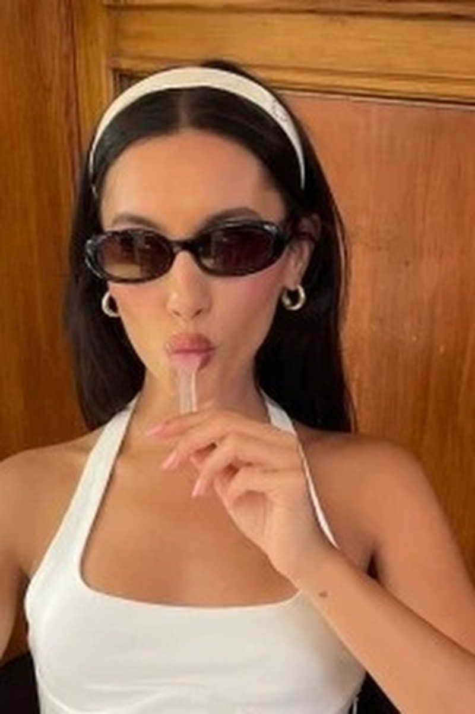

Vertical 2:3 photo, cover portrait. A 22-year-old woman with long straight dark brown hair worn loose behind the ears, very flushed cheeks, fresh dewy skin, brushed brows, brown mascara, berry tinted lips, wearing a lime-green long-sleeve crop top, purple metallic low-rise cargo pants with a silver chain, thin gold hoops and layered gold chains, with a wide purple terry-cloth headband with a thin lime-green edge and a small embroidered NYA logo, worn 3 cm behind the hairline, fully visible. Head and shoulders, centred, she looks straight into the lens over small oval black sunglasses pulled down her nose, sipping from a straw with a teasing half smile — soft eyes, hard edge. Leave 20–25% empty backdrop above her head for a magazine masthead. Shot in a studio against a seamless hot-pink backdrop. 2000s fashion-magazine editorial, direct on-camera flash, glossy skin, crisp shadow behind the subject, saturated colour, film grain, photorealistic. No text, no logos other than NYA on the headband, no watermark, headband never covered by hair, hands or glasses.